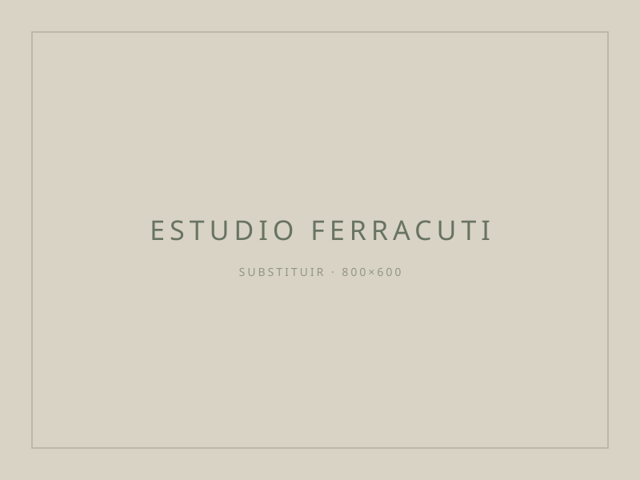

Estúdio
Um atelier discreto, com tempo para cada projecto.

O estúdio Ferracuti nasceu da convicção de que os interiores mais bonitos são também os mais úteis. Trabalhamos a partir de Lisboa, em projectos por toda a Península Ibérica.
A nossa abordagem é editorial: cada projecto começa por referências, materiais e palavras antes de chegar ao desenho. Preferimos poucos clientes e muito tempo a cada um.
Colaboramos com marceneiros, ceramistas, têxteis e artistas locais — sempre que possível, em circuito curto.
Processo
Como trabalhamos
01
Conversa inicial
Sem custo. Conhecemos o espaço, o orçamento, o ritmo de vida.
02
Conceito
Moodboard, planta funcional e direção material.
03
Projecto
Desenho técnico, caderno de acabamentos e mobiliário.
04
Execução
Coordenação de obra, fornecedores e instalação final.